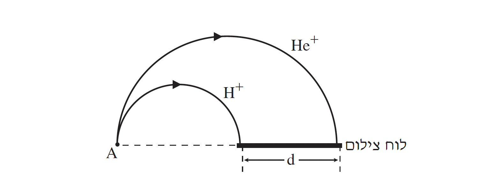

שאלה 4
יון מימן, H+ (חלקיק טעון שמסתו mH ומטענו qH), ויון הליום, He+ (חלקיק טעון שמסתו mHe = 4mH ומטענו qHe = qH), מואצים ממנוחה בשדה חשמלי על ידי מתח V. לאחר ההאצה היונים נכנסים בנקודה A לשדה מגנטי אחיד, B→. היונים נכנסים לשדה המגנטי במאונך לקווי השדה, ונעים במסלולים מעגליים עד שהם פוגעים בלוח צילום. השדה המגנטי ניצב למישור הדף (ראו תרשים).

מהו כיוון השדה המגנטי — יוצא מן הדף או נכנס אל הדף? נמקו. (6 נקודות)
האם הגודל של מהירות היונים משתנה בתנועתם בשדה המגנטי? נמקו. (6 נקודות)
בטאו את תשובותיכם לסעיפים ג ו-ד באמצעות הפרמטרים mH, qH, V, B או חלק מהם.
בטאו את זמן התנועה של יון המימן H+ בשדה המגנטי.
פי כמה גדול זמן התנועה של יון הליום He+ מזמן התנועה של יון המימן בשדה המגנטי? נמקו. (12 נקודות)
בטאו את המרחק d בין נקודות הפגיעה של היונים בלוח הצילום. (9.33 נקודות)